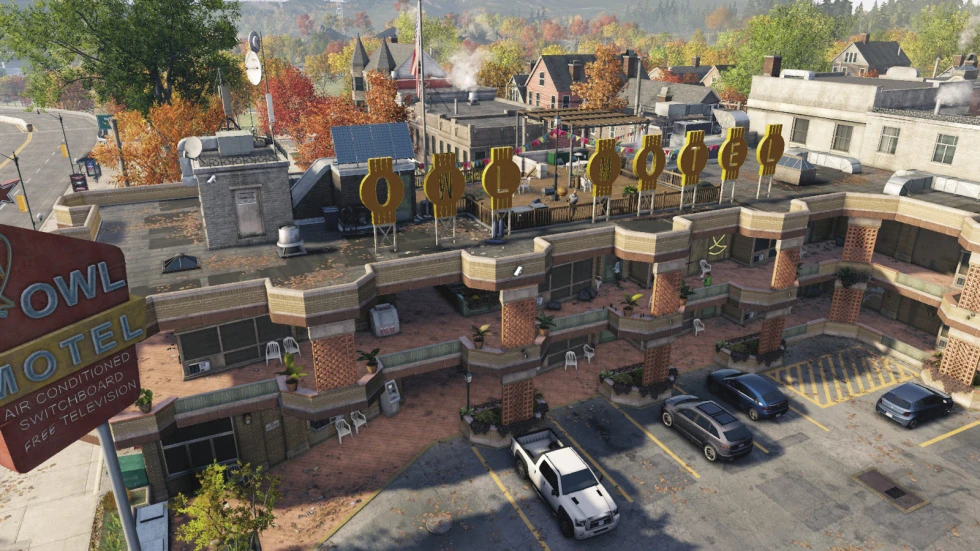
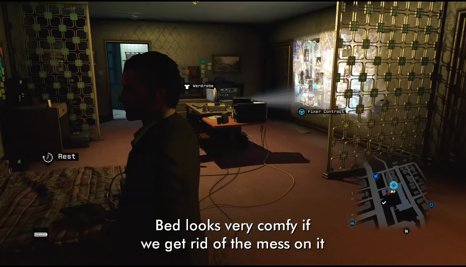
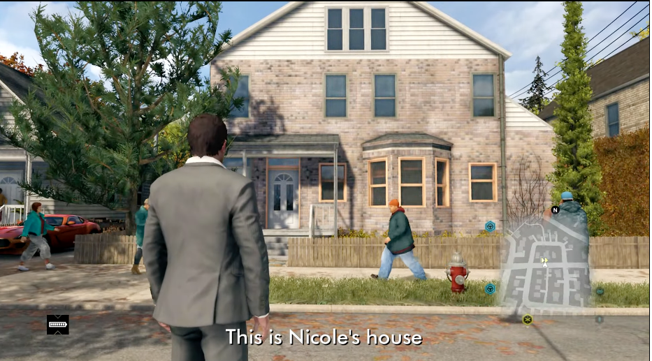
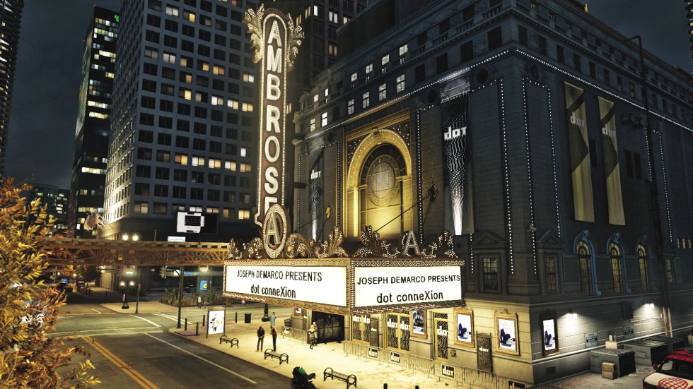
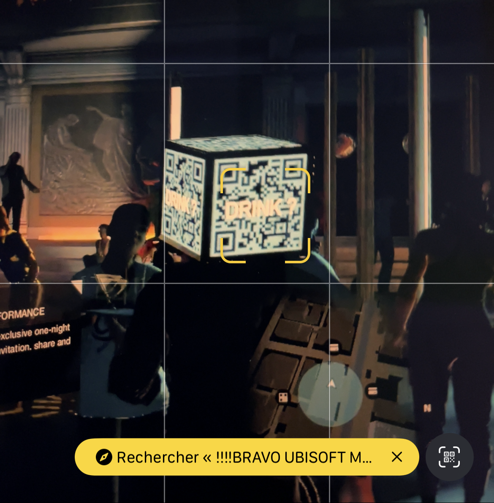

Aiden Pearce
Owl Motel

- This is the only time in the game that you got a good house : sofa, bed, bathroom
- Cosy atmosphere
- Projector which show all of the clues that Aiden found to track people who took him his niece Lena Pearce

Nicole's house

- Nicole Pearce
- Jackson Pearce
- Lena Pearce
- Aiden use the CCTV which is in the house to spy Nicky
- This house is also available in the DLC Bad Blood
Dot ConneXion (Ambrose Theatre)

- Aiden tell before the mission that it was a place where he was chilling watching movies/theaters with his sister before it went into a nightclub.
- You can enter in the ambrose theatre with a grenade glich and to the rooftop
- This place is used to hide into the rooftop to hack people in the online mode because you are almost invincible at the rooftop.
- In the Defalt condition, you can actually scan the QR Code of the pedestrian whith the QR Code hat "DRINK ?" and it will pop up the message "!!!!BRAVO UBISOFT MONTREAL!!!! :)"
